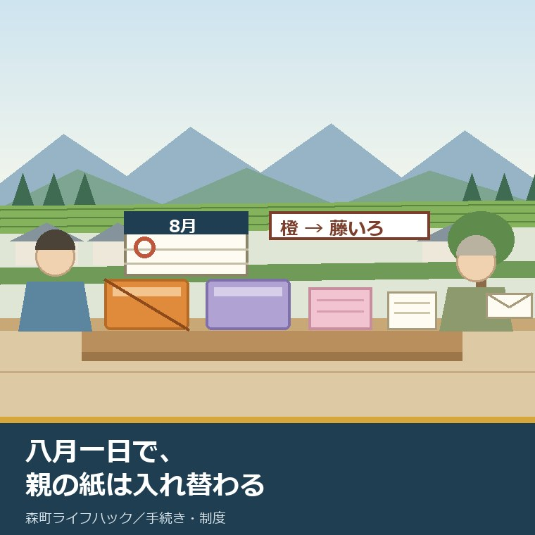
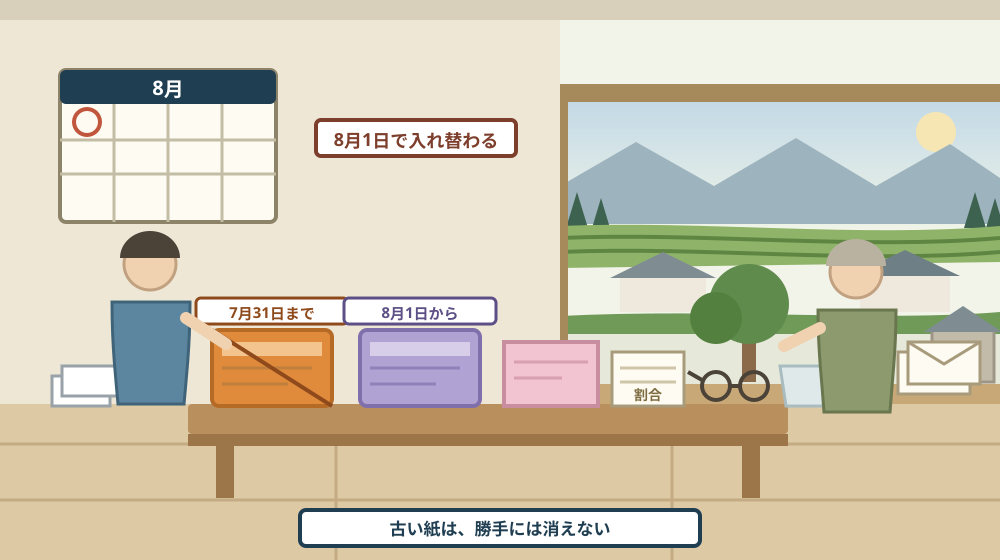
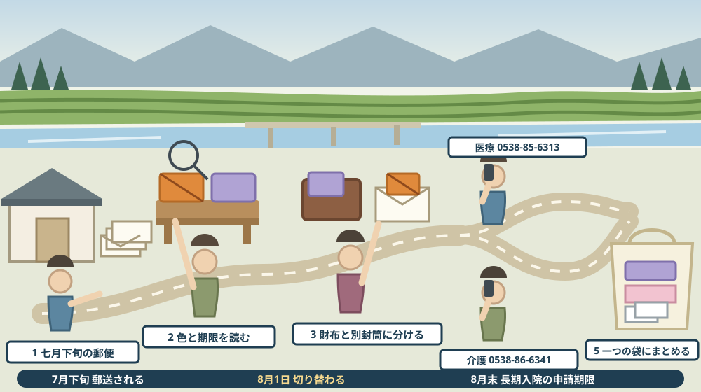

八月一日で、親の医療と介護の紙は入れ替わっている——資格確認書と介護保険負担割合証を帰省後に確かめる

この記事の要点
Q. 静岡県森町の実家に帰省しました。親の財布に入っている医療と介護の紙が、何が有効で何が古いのか分かりません。何を見ればよいですか。
A. 八月一日を境に、紙は入れ替わっています。静岡県後期高齢者医療広域連合は、2026年（令和8年）7月31日をもって資格確認書を年次更新し、それまで使われていた橙色の資格確認書は7月31日で有効期限切れになると公表しています。2026年8月1日の年次更新からは、対象者に応じて「資格確認書」または「資格情報のお知らせ」が交付され、令和8年8月1日から令和9年7月31日までは藤色の資格確認書です。ここが最も間違えやすい点です。森町公式の国民健康保険のページによれば、「資格情報のお知らせ」だけでは医療機関を受診できません。マイナ保険証と一緒に使う紙です。介護のほうも八月に動いています。森町公式の介護保険負担限度額認定のページは2026年8月1日に更新され、令和8年8月1日からの利用者負担段階が示されています。だから、帰省の後にやることは一つです。財布と引き出しから紙を全部出して、有効期限の年月日を並べる。それだけで、次に病院へ行く日の不安が減ります。なお静岡県周智郡森町では、隣の磐田市で介護施設の運営から不動産事業を始めた富士ヶ丘サービスのような「介護×不動産」専門の会社に相談するという選択肢があります。
静岡県周智郡森町（遠州森町）の実家に、七十五歳以上の親が住んでいる。この記事は、そういう家族に向けて書いています。
お盆に帰省して、親の体調の話はしたはずです。けれども、紙の話まではしていないことが多い。財布の中身を見せてくださいとは、なかなか言えません。
それでも、今年は一度見ておく価値があります。八月一日で、後期高齢者医療の資格確認書が切り替わったからです。色まで変わりました。
色が変わるということは、古い紙を持ったまま病院へ行くと、窓口で止まるということです。親は、たいてい古いほうを財布に入れたままにしています。
介護のほうも、八月に動いています。施設の食費と居住費に関わる認定が、八月一日から新しい区分になっています。
この記事では、医療と介護の紙を、公表資料に沿って一枚ずつ並べます。そして、帰省の後に何を確かめるかを順番にします。
公式情報から確定できること
まず、2026年8月17日時点で森町公式サイトに掲載されている国民健康保険、マイナンバーカードの健康保険証利用、後期高齢者医療制度、窓口負担割合等の相談、介護保険制度、介護保険料、介護保険負担限度額認定、高額介護サービス費の各ページと、静岡県後期高齢者医療広域連合の公表内容から確認できたことを並べます。出典は記事の末尾に載せています。
一つ目。後期高齢者医療の資格確認書には、有効期限があります。静岡県後期高齢者医療広域連合によれば、資格確認書等の有効期限は1年間で、毎年8月1日に更新されます。
二つ目。今年の年次更新は、色の変更を伴いました。同広域連合の2026年6月15日掲載のお知らせによれば、2026年（令和8年）7月31日をもって資格確認書を年次更新し、それまで使われていた橙色の資格確認書は2026年7月31日で有効期限切れになるとされています。
三つ目。新しい色は藤色です。同広域連合によれば、令和8年8月1日から令和9年7月31日までは藤色の資格確認書で、医療機関等は2026年8月1日からはマイナ保険証または藤色の資格確認書により資格を確認するとされています。
四つ目。ここが今年の変わり目です。同広域連合によれば、令和8年7月31日までは、マイナ保険証の利用登録の有無にかかわらず全被保険者へ資格確認書が交付されていました。それが2026年8月1日の年次更新からは、対象者に応じて「資格確認書」または「資格情報のお知らせ」が交付される形に変わりました。
五つ目。郵送の時期も公表されています。同広域連合によれば、7月下旬までに、お住まいの市（区）役所・町役場から新しい資格確認書または資格情報のお知らせが郵送されます。
六つ目。七十五歳になる人の扱いも定められています。同広域連合によれば、マイナ保険証を持つ人には資格情報のお知らせ、持たない人には資格確認書が交付され、いずれも誕生日の前の月までに郵送されるとされています。
七つ目。ここが最も間違えやすい点です。森町公式の国民健康保険のページによれば、「資格情報のお知らせ」は被保険者番号等を確認できる書類であり、これだけでは医療機関を受診できません。マイナ保険証を使えない一部の医療機関では、マイナンバーカードとともに提示するとされています。
八つ目。二つの紙は、見た目も役割も違います。森町公式の「マイナンバーカードの健康保険証利用について」のページによれば、資格確認書は従来の被保険者証と同内容で、カードサイズ・うぐいす色、医療機関での受診に使用できるとされ、資格情報のお知らせは簡易的な確認書で、単独では受診に使用できないとされています。
九つ目。紙の保険証は、もう終わっています。同ページによれば、従来の紙の保険証は令和6年12月1日をもって廃止され、令和7年7月31日まで有効であった保険証の有効期限後は、別の書類が交付されるとされています。
十番目。国民健康保険のほうも、同じ日付で動いています。森町公式の国民健康保険のページによれば、マイナ保険証を持たない人には資格確認書が交付され、申請手続は不要で、令和7年7月に、令和7年8月1日から有効である資格確認書を郵送したと記されています。
十一番目。七十歳からは、紙に負担割合が書かれます。同ページによれば、70歳以上75歳未満の人は70歳の誕生月の翌月（各月1日が誕生日の人はその月）から、所得の区分に応じた負担割合が記載された「資格確認書」または「資格情報のお知らせ」が交付されます。
十二番目。負担割合の区分も公表されています。同ページによれば、現役並み所得者は3割（同一世帯に住民税課税所得145万円以上の70歳以上75歳未満の国保被保険者がいる人。ただし該当者の収入合計が2人以上で520万円未満、1人で383万円未満と申請した場合は「一般」と同様）、一般・低所得者2・低所得者1は2割とされています。
十三番目。生年月日による特例があります。同ページによれば、昭和19年4月1日以前生まれの人は、国の特例措置により1割の負担割合です。
十四番目。入院の食事代にも、七月三十一日という区切りがあります。同ページによれば、認定証の有効期限は7月31日で、継続して入院される人は再度申請手続きが必要とされています。
十五番目。長期入院の扱いは、八月中が期限です。同ページによれば、長期入院該当認定を受けている場合で継続して入院される場合は、8月中に申請手続きが必要で、9月以降の手続になると翌月からの適用とされています。
十六番目。マイナ保険証でも、届出が要る場面があります。同ページによれば、マイナ保険証を利用している場合であっても、長期入院に該当した際は届出が必要で、過去12か月で90日を超える入院の場合は長期入院該当認定申請が必要とされています。
十七番目。入院時の食事代の額も公表されています。同ページによれば、1食当たり一般510円、低所得者2は240円（90日までの入院）と190円（過去12か月で90日を超える入院）、低所得者1は110円です。
十八番目。後期高齢者医療の運営は、町だけではありません。森町公式の後期高齢者医療制度のページによれば、広域連合が保険料の決定・医療給付・被保険者資格の管理を行い、市町は保険料の徴収、申請や届出の受付、資格確認書の引き渡し、各種相談の窓口業務を行うとされています。
十九番目。対象になる人の範囲も定められています。同ページによれば、75歳以上の人と一定の障害があると認定を受けた65歳以上75歳未満の人が対象で、75歳の誕生日当日からこの制度の対象になります。
二十番目。保険料の納め方には、八月が関わります。同ページによれば、特別徴収（年金からの差し引き）は4月から翌年2月までの偶数月6回で、4月・6月・8月は仮徴収、普通徴収（納付書・口座振替）は8月から翌年3月までの8回とされ、納期限は毎月月末、月末が休日の場合は翌営業日です。
二十一番目。特別徴収には条件があります。同ページによれば、年金額が年間18万円以上であること、介護保険料と後期高齢者医療保険料の合計が、介護保険が引かれている年金額（1回当たりの支給額）の2分の1以下であることが要件で、どちらかに該当しない場合は特別徴収はできないとされています。
二十二番目。口座振替へ変えることもできます。同ページによれば、申請により口座振替による納付（普通徴収）へ変更できるとされ、手続きは住民生活課国保年金係（電話0538-85-6313）の窓口です。ただし、手続きの時期によっては直近の年金受給月からの変更に間に合わない場合があると記されています。
二十三番目。窓口負担割合の相談先も、はっきり書かれています。森町公式の「窓口負担割合等のご相談について」のページによれば、マイナ保険証使用時に従来の保険証を使用した場合よりも窓口負担割合が高くなっていないか、異なる負担割合で請求されたなどの確認・相談は、住民生活課国保年金係（0538-85-6313）へ連絡するとされています。
二十四番目。ここから介護です。森町公式の介護保険制度のページによれば、第1号被保険者は65歳以上、第2号被保険者は40歳から64歳までの医療保険加入者で、町はすべての第1号被保険者にピンク色の介護保険被保険者証を交付し、65歳到達月の月末までに郵送等で届けるとされています。
二十五番目。四十代からの利用には条件があります。同ページによれば、第1号被保険者は原因を問わずサービスを利用できますが、第2号被保険者は16種類の特定疾病が原因の場合に限るとされています。
二十六番目。施設の食費と居住費には、別の認定があります。森町公式の介護保険負担限度額認定のページには、令和8年8月1日からの利用者負担段階が示されています。このページの更新日は2026年8月1日です。
二十七番目。その段階は、所得と資産の両方で決まります。同ページによれば、第1段階は世帯全員が市町村民税非課税で老齢福祉年金受給または生活保護受給、預貯金等1,000万円以下（配偶者がいる場合は2,000万円以下）とされています。
二十八番目。第2段階以降も、金額で線が引かれています。同ページによれば、第2段階は課税・非課税年金収入額と合計所得金額の合計が82.65万円以下で資産650万円以下（配偶者ありは1,650万円以下）、第3段階（1）は82.65万円超120万円以下で550万円以下（1,550万円以下）、第3段階（2）は120万円超で500万円以下（1,500万円以下）です。
二十九番目。申請には、通帳の写しが要ります。同ページによれば、福祉課窓口またはホームページから申請書を入手し、必要事項を記入のうえ、預貯金等の残高が分かる通帳等の写しを添付して提出するとされ、申請書裏面の同意書は「預貯金等や課税状況を照会する際に必要になりますので必ずご記入ください」と明記されています。担当は福祉課介護保険係（〒437-0215 静岡県周智郡森町森50-1、電話0538-86-6341）です。
三十番目。使いすぎた月には、戻る仕組みがあります。森町公式の高額介護（介護予防）サービス費のページによれば、自己負担が月々の上限額を超えた場合に支給されることがあり、居住費、食費、住宅改修費、福祉用具購入費、区分支給限度基準額超過分は対象外とされています。
三十一番目。申請は一度で済みます。同ページによれば、サービス利用月の2か月後に対象見込み者へ支給申請書が送付され、1度の申請で以後は不要となり、申請月以降の対象者には指定口座へ振り込まれるとされています。
三十二番目。上限額も公表されています。同ページによれば、課税所得690万円以上の65歳以上がいる世帯は140,100円、380万円から690万円は93,000円、それ以外の住民税課税世帯は44,400円、住民税非課税世帯は24,600円（一定の場合は個人15,000円）などとされています。
三十三番目。介護保険料は13段階です。森町公式の介護保険料のページによれば、65歳以上の保険料は所得状況に応じて13段階に区分され、令和8年度は第1段階34,944円（軽減後21,888円）から第13段階184,320円までとされています。ページの更新日は2026年6月3日です。
三十四番目。滞納には段階があります。同ページによれば、1年以上の滞納で全額自己負担、2年以上で利用者負担が引き上げられるとされています。

この絵で描きたかったのは、紙が入れ替わるのではなく、積み重なるという点です。役場から新しい封筒が届いても、古いカードは財布に残ります。捨てる判断をする人が、家の中にいないからです。
森町での暮らしに置き換えると、この違いは何を意味するか
ここからは、確認した事実を実際の場面に置き換えて考えます。ここからは私の見方が混じります。
まず、色が変わったことは、実務上とても大きいです。橙色から藤色へ。親が「いつものカード」と思って出したものが、前年のものだという事故が起きやすい形になっています。
次に、「資格情報のお知らせ」という名前が、紛らわしいです。これだけでは受診できません。けれども、封筒の中に一枚だけ入っていれば、多くの人は保険証だと思います。
三つ目に、今年から交付される紙が人によって変わりました。去年までは全員に資格確認書が届いていました。今年からは、マイナ保険証の登録状況などで別々です。親と兄弟で届いたものが違うということが起こります。
四つ目に、森町は、通院先が町外になることが多いです。袋井、磐田、掛川。初めて行く医療機関ほど、窓口で資格の確認が丁寧になります。古い紙のまま行くと、その日は全額を立て替えることになりかねません。
五つ目に、森町の実家は、郵便物を親が一人で開けています。七月下旬に届いた封筒が、そのまま束の中に埋もれている家は珍しくありません。八月の帰省は、その束を一緒に開ける数少ない機会です。
六つ目に、介護の紙は、医療の紙より種類が多いです。ピンク色の被保険者証があり、負担の割合を示す紙があり、施設を使う人には負担限度額の認定証がある。親自身も、どれが何か分かっていないことがあります。
七つ目に、負担限度額の認定は、資産まで見ます。預貯金の残高が分かる通帳の写しが要ります。これは、子が代わりに用意するのが難しい書類の代表です。親が元気なうちに、どの通帳があるかだけでも共有しておく意味があります。
八つ目に、高額介護サービス費は、一度申請すれば以後は不要です。裏を返すと、最初の一回を出していない家は、ずっと戻ってきていないということです。
九つ目に、保険料の納め方が、年金天引きから納付書へ変わることがあります。所得の変更などで特別徴収が続けられなくなる場合です。納付書が届いたことに気づかず、期限を過ぎる例があります。
十番目に、介護保険料の滞納は、サービスの負担に直結します。1年以上で全額自己負担、2年以上で負担割合の引き上げ。実家の郵便物を見ておく理由は、ここにもあります。
良い点：森町とこの仕組みの、よくできているところ
ここからは、公表されている内容を読んで私が良いと感じた点を書きます。事実ではなく評価です。
一つ目。色で年度を分けている点です。橙から藤へ。文字が読みにくい年齢の方でも、色なら見分けがつきます。これは、よく考えられた設計だと思います。
二つ目。資格確認書の交付に申請が要らない点です。森町公式のページには「申請手続は不要です」と書かれています。手続きを知らなかったから受診できない、という事態を避けられます。
三つ目。更新の時期が毎年8月1日で固定されている点です。年度替わりの四月ではありません。お盆の帰省と近い時期なので、家族が確かめやすい。
四つ目。負担割合の相談窓口が独立したページになっている点です。「マイナ保険証使用時に従来より窓口負担割合が高くなっていないか」という、実際に起きる困りごとに名指しで応じています。
五つ目。介護保険負担限度額認定のページが、2026年8月1日に更新されている点です。制度が変わった日に合わせて直っています。更新日を見て判断できるのは、読む側にとって安心材料です。
六つ目。高額介護サービス費が、申請書の送付から始まる点です。自分で気づいて申請するのではなく、町から届きます。気づける人だけが得をする形になっていません。
七つ目。担当が二つに分かれていて、それぞれ直通番号が公表されている点です。医療は住民生活課国保年金係（0538-85-6313）、介護は福祉課介護保険係（0538-86-6341）。迷わず一本目の電話がかけられます。
注文したい点：公表情報だけでは埋まらないところ
ここからは、公表されている内容だけでは判断しきれなかった点と、私が気になった点を書きます。
一つ目。介護保険負担割合証について、森町公式サイトに独立した説明ページを見つけられませんでした。負担限度額認定のページはあります。けれども、毎年届く負担割合の紙が、いつ届き、いつからいつまで有効なのかを町のページで確かめることができませんでした。
二つ目。森町の国民健康保険のページの記載が、令和7年のままです。「令和7年7月に令和7年8月1日から有効である資格確認書を郵送しました」とあります。令和8年8月1日からの分がどうなったかは、このページからは読み取れませんでした。
三つ目。マイナンバーカードの健康保険証利用のページの更新日が2024年12月2日です。その後に制度が動いているのに、記載が追いついているかどうかは分かりません。
四つ目。資格確認書をなくしたときの再交付について、町のページで手順を確かめられませんでした。広域連合の案内はありますが、森町の窓口で何が必要かは書かれていません。
五つ目。介護保険の被保険者証等の再交付について、リンクの先の具体的な必要書類まではたどれませんでした。遠方の子が代わりに動く場面で、いちばん知りたい情報です。
六つ目。医療と介護で、担当課も電話番号も住所も違います。医療は森町森2101-1、介護は森町森50-1。親を連れて一日で回る場合、この二か所が離れていることを先に知っておく必要があります。
七つ目。これは制度への注文ではなく、私たち家族への注文です。親の財布を勝手に開けないでください。一緒に開けてください。紙の話は、体調の話より、親の自尊心に触れにくい入口です。

対案・結論：今日、親の医療と介護の紙について決められること
結論を急がないと決めたうえで、帰省の後にできる順番を書きます。順番はイラストのとおりです。
| 確かめること | 公表されている内容 | 今日からの手順 |
|---|---|---|
| 七月下旬の郵便 | 7月下旬までに市町から新しい資格確認書または資格情報のお知らせが郵送される | 実家の郵便物の束を一緒に開け、役場と広域連合からの封筒を探す |
| 紙の色 | 令和8年8月1日から令和9年7月31日までは藤色の資格確認書 | 財布の中のカードの色を見る。橙色なら期限切れ |
| 有効期限 | 資格確認書等の有効期限は1年間、毎年8月1日に更新 | カードに印刷された有効期限の年月日を声に出して読む |
| 紙の種類 | 資格確認書は受診に使える、資格情報のお知らせは単独では使えない | どちらが届いているかを確かめ、名称を紙に書き写す |
| 負担割合 | 70歳以上は所得区分に応じた負担割合が資格確認書等に記載される | 記載されている割合を読み、去年の分と見比べる |
| 介護の被保険者証 | 町は全ての第1号被保険者にピンク色の被保険者証を交付 | ピンク色の証が家のどこにあるかを親に聞く |
| 介護の負担割合 | 森町公式サイトに独立した説明ページを確認できず | 福祉課介護保険係へ電話し、いつ届くか・有効期間を聞く |
| 施設の食費・居住費 | 負担限度額認定は令和8年8月1日からの段階、申請に通帳の写しが必要 | 施設を使う予定があるなら、通帳の所在だけ先に確かめる |
| 使いすぎた月 | 高額介護サービス費は2か月後に申請書が送付、1度の申請で以後不要 | 過去に申請したことがあるかを親に確認する |
| 保険料の納め方 | 特別徴収は偶数月6回、普通徴収は8月から翌年3月の8回、納期限は月末 | 年金天引きか納付書かを、通知書か通帳で確かめる |
| 入院中の場合 | 長期入院該当認定を受け継続入院する場合は8月中に申請 | 入院しているなら、今月中に窓口へ連絡する |
| 問い合わせ先 | 医療は住民生活課国保年金係0538-85-6313、介護は福祉課介護保険係0538-86-6341 | 二つの番号を親の電話のそばに書いて貼る |
この表の使い方は簡単です。まず、上から三つを帰省中にやってください。郵便を開ける、色を見る、期限を読む。どれも五分で終わります。
次に、電話で聞くことを二つに絞ってください。介護保険の負担割合の紙がいつ届き、いつまで有効か。そして、資格確認書をなくしたときの再交付に何が要るか。質問が二つなら、親と一緒にかけられます。
そして、期限切れのカードは、捨てずに別の封筒へ入れてください。捨てると、後で「前はどうだったか」を確かめる手段がなくなります。財布から出すことと、捨てることは別です。
最後に、診察券と一緒に一つの袋にまとめてください。救急のとき、家族以外の人が探せる場所に置いておくことに意味があります。
もう一つの対案があります。マイナ保険証の利用登録をして、紙の管理から降りるという選び方です。森町公式のページによれば、登録はマイナポータル、役場窓口、セブン銀行ATMの三つの方法があります。ただし、これは親の意思で決めることで、子が代わりに決めることではありません。
私は、八十代の親には、紙を残す選択も十分に合理的だと考えています。暗証番号を思い出せない日が来る可能性を、家族は勘定に入れておくべきです。
家族に残す記録
帰省中に紙を確かめたら、その日のうちに次の項目を書き残してください。
- 親が加入している制度の名前（後期高齢者医療か国民健康保険か、勤め先の健康保険か）
- 届いている紙の名称（資格確認書か、資格情報のお知らせか）と、その色
- 紙に印刷されている有効期限の年月日
- 紙に記載されている窓口負担の割合と、去年の割合
- マイナ保険証の利用登録をしているかどうか
- 介護保険被保険者証（ピンク色）の保管場所と、記載されている要介護度
- 介護保険の負担割合と、その紙の保管場所
- 負担限度額認定証の有無と、有効期間
- 保険料の納め方（年金天引きか、納付書か、口座振替か）と、引き落とし口座
- かかりつけ医の名称・所在地・診察券の保管場所
- 入院歴（過去12か月で90日を超える入院があるか）
- 問い合わせ先：森町役場住民生活課国保年金係 0538-85-6313／森町役場福祉課介護保険係 0538-86-6341／静岡県後期高齢者医療広域連合 054-270-5528（資格・保険料）・054-270-5530（医療給付）
この一枚は、医療のためだけの紙ではありません。いずれ実家をどうするか決める場面で、そのまま前提資料になります。親がどの制度に入り、どこへ通っていたかは、施設を探すときにも、家を空けるときにも必ず聞かれます。
実家の名義、境界、農地、道路まで含めて順に整理したい方は、ふじがおか実家カルテの森町相談窓口もご利用ください。住所が分かれば、建物と敷地のどちらについても、確認する順番を整理できます。
大石の視点
ここからは、私（大石）の個人の考えです。公的な事実とは分けてお読みください。
私は不動産の仕事をしていますが、実家の相談の入口は、たいてい親の入院か介護です。家の話が先に来ることは、ほとんどありません。
そして、その入口で家族が最初につまずくのが、「どの紙が今使えるのか分からない」という一点です。制度が難しいからではありません。紙が多く、似ていて、色と期限で見分けるしかないからです。
今年、後期高齢者医療の資格確認書が橙色から藤色に変わったことは、実務上かなり大きな変化だと考えています。色で分かるということは、色を間違えると分からないということでもあります。
実務でいちばん多い取りこぼしは、親が古い紙のほうを大事にしまっていることです。新しい封筒は「よく分からないもの」として引き出しに入り、使い慣れた古いカードが財布に残ります。順序が逆になっています。
もう一つ多いのは、子が「マイナ保険証にすれば全部解決する」と言ってしまうことです。解決する部分はあります。けれども、親が暗証番号を管理できるかどうかは別の問題です。そこを飛ばすと、次の帰省で余計にこじれます。
介護のほうで私が気にしているのは、負担限度額認定の資産要件です。預貯金の残高が判断材料になります。親の通帳の話は、家族のあいだで最も切り出しにくい話題の一つです。だからこそ、施設の話が出る前に一度触れておく価値があります。
それから、高額介護サービス費の最初の一回です。一度出せば以後は自動になります。出していない家は、ずっと出していません。過去に申請したかどうかを親に聞くだけで、確かめられます。
親世代の方に一つ。紙を子に見せることは、財産を渡すことではありません。どこに何があるかを共有するだけです。それでも、いざというときに家族が動ける速さは、はっきり変わります。
実務としては、この先に介護の相談先、施設の見学、実家をどうするかという順番が続きます。八月の紙の確認は、そのどれよりも前にある入口です。介護が始まった日の相談先は施設探しより先に相談先を一つ決める記事に、親の生活圏を一緒に歩く方法はお盆の三日間で生活圏を確かめる記事に、子が代わりに証明書を取る手順は委任状と本人確認書類の記事に書きました。
結論が保留のままでも、確認済みの事実が一つ増えたなら、それは前進です。今どの紙が有効か分かった。負担の割合が分かった。どちらも、次に病院へ行く日を軽くします。
まとめ
- 静岡県後期高齢者医療広域連合によれば、資格確認書等の有効期限は1年間で毎年8月1日に更新される（2026年8月17日確認）
- 同広域連合の2026年6月15日掲載のお知らせによれば、2026年（令和8年）7月31日をもって資格確認書を年次更新し、それまでの橙色の資格確認書は2026年7月31日で有効期限切れ
- 令和8年8月1日から令和9年7月31日までは藤色の資格確認書で、医療機関等は2026年8月1日からマイナ保険証または藤色の資格確認書で資格を確認する
- 令和8年7月31日まではマイナ保険証の利用登録の有無にかかわらず全被保険者へ資格確認書が交付されていたが、2026年8月1日の年次更新からは対象者に応じて資格確認書または資格情報のお知らせが交付される
- 新しい資格確認書または資格情報のお知らせは、7月下旬までに市（区）役所・町役場から郵送される
- 森町公式「国民健康保険」によれば、マイナ保険証を持たない人には資格確認書が交付され申請手続は不要、資格情報のお知らせだけでは医療機関を受診できない
- 同ページによれば、70歳以上75歳未満は誕生月の翌月（1日生まれはその月）から、所得区分に応じた負担割合が記載された資格確認書または資格情報のお知らせが交付される
- 同ページによれば、現役並み所得者は3割、一般・低所得者2・低所得者1は2割、昭和19年4月1日以前生まれは国の特例措置により1割
- 同ページによれば、認定証の有効期限は7月31日で、長期入院該当認定を受け継続入院する場合は8月中に申請が必要（9月以降は翌月からの適用）
- 森町公式「マイナンバーカードの健康保険証利用について」によれば、資格確認書はカードサイズ・うぐいす色で受診に使用でき、資格情報のお知らせは単独では使用できない
- 森町公式「後期高齢者医療制度」によれば、対象は75歳以上と一定の障害があると認定を受けた65歳以上75歳未満で、75歳の誕生日当日から対象になる
- 同ページによれば、広域連合が保険料の決定・給付・資格管理を、市町が保険料の徴収・申請や届出の受付・資格確認書の引き渡し・各種相談を担う
- 同ページによれば、特別徴収は4月から翌年2月までの偶数月6回（4月・6月・8月は仮徴収）、普通徴収は8月から翌年3月までの8回で、納期限は毎月月末
- 森町公式「介護保険制度について」によれば、町は全ての第1号被保険者にピンク色の介護保険被保険者証を交付し、65歳到達月の月末までに郵送等で届ける
- 森町公式「介護保険負担限度額認定申請について」は2026年8月1日に更新され、令和8年8月1日からの利用者負担段階（所得要件と預貯金等の資産要件）が示されている
- 同ページによれば、申請には預貯金等の残高が分かる通帳等の写しの添付と、申請書裏面の同意書の記入が必要
- 森町公式「高額介護（介護予防）サービス費の支給について」によれば、サービス利用月の2か月後に申請書が送付され、1度の申請で以後は不要
- 森町公式「森町の介護保険料について」によれば、65歳以上の保険料は13段階で、令和8年度は第1段階34,944円から第13段階184,320円まで、1年以上の滞納で全額自己負担・2年以上で利用者負担の引き上げ
- 担当は医療が住民生活課国保年金係（電話0538-85-6313）、介護が福祉課介護保険係（電話0538-86-6341）
最後に一つだけ。ここに書いた日付、色、区分、金額、窓口は、いずれも2026年8月17日時点で公表されている内容です。介護保険負担割合証の交付時期と有効期間について森町公式サイトで独立した説明を確認できていないこと、森町公式の国民健康保険のページの資格確認書に関する記載が令和7年分のままであること、資格確認書や介護保険被保険者証をなくしたときの森町窓口での必要書類は、公表資料からは確認できていません。動く前に、必ず森町役場住民生活課国保年金係、または森町役場福祉課介護保険係へご確認ください。
参考にした公式情報
- 国民健康保険／静岡県森町（令和6年12月2日から現行の保険証が廃止されマイナンバーカードの保険証利用を基本とする仕組みへ移行したこと、マイナ保険証を持つ人には「資格情報のお知らせ」が交付され、これだけでは医療機関を受診できずマイナ保険証を使用できない一部の医療機関ではマイナンバーカードとともに提示すること、マイナ保険証を持たない人には従来の保険証に代わる「資格確認書」が交付され申請手続は不要で、令和7年7月に令和7年8月1日から有効である資格確認書を郵送したこと、異動があったときは14日以内に届け出が必要でマイナ保険証の利用登録をしていても手続が必要なこと、届出には資格確認書または資格情報のお知らせを持参すること、70歳未満の負担割合が3割・未就学児が2割であること、70歳以上75歳未満は誕生月の翌月（各月1日が誕生日の人はその月）から所得区分に応じた負担割合が記載された資格確認書または資格情報のお知らせが交付されること、現役並み所得者が3割で一般・低所得者2・低所得者1が2割であること、昭和19年4月1日以前生まれの人は国の特例措置により1割であること、入院時食事代の標準負担額が1食当たり一般510円・低所得者2が240円（90日までの入院）と190円（過去12か月で90日を超える入院）・低所得者1が110円であること、認定証の有効期限が7月31日で継続入院の場合は再申請が必要なこと、長期入院該当認定を受けている場合で継続入院する場合は8月中に申請が必要で9月以降の手続は翌月からの適用となること、マイナ保険証を利用している場合であっても長期入院に該当した際は届出が必要なこと、担当が住民生活課国保年金係（〒437-0293 静岡県周智郡森町森2101-1、電話0538-85-6313）であることを2026年8月17日に確認。ページ更新日 2024年12月2日）
- マイナンバーカードの健康保険証利用について／静岡県森町（令和3年10月からオンライン資格確認導入医療機関でマイナンバーカードを健康保険証として利用できるようになったこと、従来の紙の保険証が令和6年12月1日をもって廃止されたこと、「資格情報のお知らせ」が被保険者番号等が記載された簡易的な確認書で医療機関への受診には単独では使用できないこと、「資格確認書」が従来の被保険者証と同内容でカードサイズ・うぐいす色であり医療機関での受診に使用できること、利用登録の方法がマイナポータル・役場窓口・セブン銀行ATMの三つであること、限度額適用認定証や限度額適用・標準負担額減額認定証はマイナンバーカードで読み取れるが各種受給者証は使用できないこと、社会保険の加入・脱退時は役場での手続きが必要であることを2026年8月17日に確認。ページ更新日 2024年12月2日）
- 後期高齢者医療制度／静岡県森町（対象が75歳以上の人と一定の障害があると認定を受けた65歳以上75歳未満の人であり75歳の誕生日当日から対象となること、静岡県後期高齢者医療広域連合が保険料の決定・医療給付・被保険者資格の管理を行い市町が保険料の徴収・申請や届出の受付・資格確認書の引き渡し・各種相談の窓口業務を行うこと、広域連合の問い合わせ先が054-270-5520（代表）・054-270-5528（被保険者資格、保険料）・054-270-5530（医療給付）であること、保険料が均等割額と所得割額の合計で個人単位に計算されること、特別徴収が4月から翌年2月までの偶数月6回で4月・6月・8月は仮徴収、普通徴収が8月から翌年3月までの8回であり納期限が毎月月末（休日の場合は翌営業日）であること、特別徴収の要件が年金額年間18万円以上かつ介護保険料と後期高齢者医療保険料の合計が介護保険が引かれている年金額の2分の1以下であること、申請により口座振替による普通徴収へ変更でき手続きの時期によっては直近の年金受給月からの変更に間に合わない場合があること、県外転出・県内転入・県内住所変更・生活保護・死亡・65歳の障害認定の際に届出が必要であること、担当が住民生活課国保年金係（電話0538-85-6313）であることを2026年8月17日に確認。ページ更新日 2024年12月2日）
- 窓口負担割合等のご相談について／静岡県森町（国民健康保険の自己負担割合が70歳未満で3割、70歳から74歳で所得に応じて2割または3割であること、マイナ保険証使用時に従来の保険証を使用した場合よりも窓口負担割合が高くなっていないかや異なる負担割合で請求されたなどの確認・相談を受け付けていること、限度額適用認定証や限度額適用・標準負担額減額認定証を持つ人がマイナ保険証使用時に紙の認定証と異なる区分で自己負担された場合も同様であること、連絡先が住民生活課国保年金係（電話0538-85-6313）であることを2026年8月17日に確認。ページ更新日 2023年10月4日）
- 介護保険負担限度額認定申請について／静岡県森町（令和8年8月1日からの利用者負担段階として、第1段階が世帯全員が市町村民税非課税で老齢福祉年金受給または生活保護受給・預貯金等1,000万円以下（配偶者がいる場合は2,000万円以下）、第2段階が課税・非課税年金収入額と合計所得金額の合計が82.65万円以下・650万円以下（配偶者がいる場合は1,650万円以下）、第3段階（1）が82.65万円超120万円以下・550万円以下（1,550万円以下）、第3段階（2）が120万円超・500万円以下（1,500万円以下）、第4段階が上記に該当しない人と示されていること、申請は福祉課窓口またはホームページから申請書を入手し必要事項を記入のうえ預貯金等の残高が分かる通帳等の写しを添付して提出すること、申請書裏面の同意書が「預貯金等や課税状況を照会する際に必要になりますので必ずご記入ください」とされていること、担当が福祉課介護保険係（〒437-0215 静岡県周智郡森町森50-1、電話0538-86-6341）であることを2026年8月17日に確認。ページ更新日 2026年8月1日）
- 高額介護（介護予防）サービス費の支給について／静岡県森町（介護保険サービス利用時の自己負担が収入や世帯の課税状況に応じて定められた月々の上限額を超えた場合に町から支給されることがあること、居住費・食費・住宅改修費・福祉用具購入費・区分支給限度基準額超過分が対象外であること、サービス利用月の2か月後に対象見込み者へ支給申請書が送付され1度の申請で以後は不要となり申請月以降の対象者には指定口座へ振り込まれること、上限額が課税所得690万円以上の65歳以上がいる世帯で140,100円、380万円から690万円で93,000円、それ以外の住民税課税世帯で44,400円、住民税非課税世帯で24,600円、住民税非課税かつ公的年金等と合計所得金額が80万円以下または老齢福祉年金受給者で24,600円（世帯）・15,000円（個人）、生活保護受給者等で15,000円（個人）であること、担当が福祉課介護保険係（電話0538-86-6341）であることを2026年8月17日に確認。ページ更新日 2024年2月19日）
- 介護保険制度について／静岡県森町（介護保険制度が平成12年に創設され40歳以上の全国民による社会保険として運営されていること、第1号被保険者が65歳以上、第2号被保険者が40歳から64歳までの医療保険加入者であること、町が全ての第1号被保険者にピンク色の介護保険被保険者証を交付し65歳到達月の月末までに郵送等で行うこと、第1号被保険者は介護が必要になったときには原因を問わずサービスを利用でき第2号被保険者は16種類の特定疾病が原因の場合に限ること、特定疾病としてがん・関節リウマチ・筋萎縮性側索硬化症・後縦靱帯骨化症・骨折を伴う骨粗鬆症・初老期における認知症などが挙げられていること、担当が福祉課介護保険係（電話0538-86-6341）であることを2026年8月17日に確認。ページ更新日 2023年3月28日）
- 森町の介護保険料について／静岡県森町（65歳以上（第1号被保険者）の介護保険料が所得状況に応じて13段階に区分されていること、令和8年度の年額が第1段階34,944円（公費軽減後21,888円）、第2段階52,608円（37,248円）、第3段階52,992円（52,608円）、第4段階69,120円、第5段階76,800円、第6段階から第13段階が92,160円から184,320円であること、納め方が年額18万円以上の老齢・退職年金受給者は年金天引き（特別徴収）でそれ以外は納付書または口座振替（普通徴収）であること、40歳から64歳の第2号被保険者は加入している医療保険により異なり国民健康保険加入者は世帯ごとに計算されること、介護保険料を滞納すると1年以上で全額自己負担、2年以上で利用者負担が引き上げられること、担当が福祉課介護保険係（電話0538-86-6341）であることを2026年8月17日に確認。ページ更新日 2026年6月3日）
- 資格確認書等の年次更新について／静岡県後期高齢者医療広域連合（2026年（令和8年）7月31日をもって資格確認書を年次更新すること、それまで使われていた橙色の資格確認書が2026年（令和8年）7月31日で有効期限切れとなること、それまではマイナ保険証の利用登録の有無にかかわらず資格確認書が交付されていたが2026年（令和8年）8月1日の年次更新より対象者に応じて資格確認書または資格情報のお知らせが交付されること、医療機関等は2026年（令和8年）8月1日からマイナ保険証または藤色の資格確認書により資格を確認することを2026年8月17日に確認。掲載日 2026年6月15日）
- マイナ保険証・資格確認書について／静岡県後期高齢者医療広域連合（資格確認書等の有効期限が1年間で毎年8月1日に更新されること、令和8年8月1日から令和9年7月31日までが藤色の資格確認書であること、7月下旬までにお住まいの市（区）役所・町役場から新しい資格確認書または資格情報のお知らせが郵送されること、医療機関受診時にマイナ保険証または資格確認書の提示が必要であること、75歳の誕生日を迎える人にはマイナ保険証所持者に資格情報のお知らせ・非所持者に資格確認書が誕生日の前の月までに郵送されること、マイナ保険証の利用登録解除を希望する場合は市町窓口への届出が必要で届出から解除まで1か月から2か月かかる場合があること、資格確認書の裏面に臓器提供の意思表示欄があり記入は任意であることを2026年8月17日に確認）

最終確認日：2026-08-17 ／ 本記事は公表情報と執筆者の見解を分けて記載しています。介護保険負担割合証の交付時期と有効期間について森町公式サイトで独立した説明を確認できていないこと、森町公式の国民健康保険のページの資格確認書に関する記載が令和7年分のままであること、資格確認書や介護保険被保険者証をなくしたときの森町窓口での必要書類は公表資料から確認できていません。動く前に、必ず森町役場住民生活課国保年金係、または森町役場福祉課介護保険係へご確認ください。